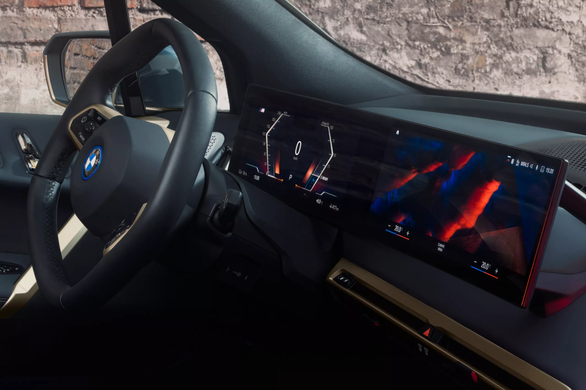
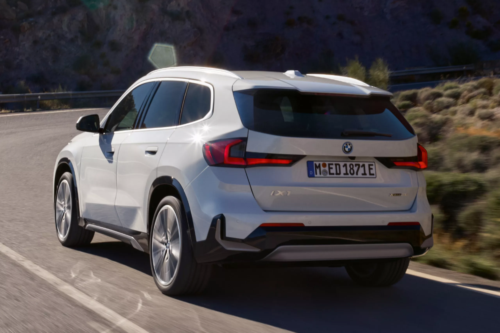
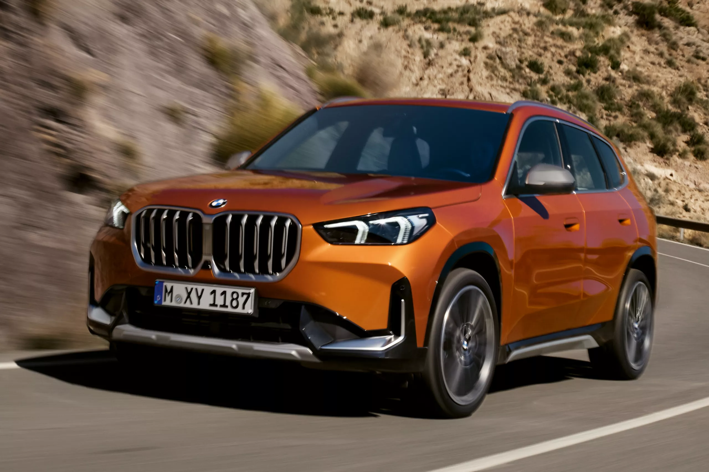

انخرط في عالم BMW لتيسير إمكانات التنقل بالسيارات الكهربائية تجمع سياراتنا الكهربائية بين أساليب القيادة الحديثة والتقنيات الفعالة. من سيارات السيدان الأنيقة إلى السيارات الرياضية المتعددة الأغراض العالية الأداء - ابحث عن السيارة التي تناسب نمط حياتك. اكتشف المزيد حول تقنيات الشحن الحديثة المدعومة بإمكانات بنى أساسية ملائمة للشحن. حقق أقصى استفادة من مدى المسافة المقطوعة كهربائياً تماماً لأنه سيجعلك أقرب إلى وجهاتك في أنشطة الحياة اليومية وأثناء الرحلات الطويلة.
BMW
مزايا
سيارات
الكهربائية
محلياً خالية من الانبعاثات
يمكنك الآن القيادة في صمت تام تقريباً ومن دون انبعاثات أثناء الرحلات القصيرة أو عند القيادة في جميع أرجاء المدينة. وهذا معناه أنك يمكنك تقليل انبعاثات ثاني أكسيد الكربون ومستويات الضوضاء في المدينة، وتصبح في الوقت نفسه قدوة للقدرة على التنقل الواعي بيئياً. اكتشف المزيد حول كيفية تأثير التنقل الكهربائي على بيئتنا.
الشحن بأبسط الأساليب
استخدم صندوق الشحن الجداري الخاص بك لشحن سيارتك الكهربائية بكل يسر وراحة في أجواء منزلك. اشحن سيارتك طوال الليل لتبدأ يومك ببطارية مشحونة. ميزات امتلاك محطة الشحن الخاصة بك: يمكنك توفير الوقت وشحن سيارتك الكهربائية بشكل موثوق في المنزل.
تكلفة التشغيل منخفضة
الحدّ من انبعاثات ثاني أكسيد الكربون وخفض التكلفة تكاليف الخدمة المستمرة للسيارة الكهربائية أقل عند مقارنتها بتكاليف خدمة السيارات المناظرة التي تعمل بمحركات احتراق داخلي. نظراً لأن بعض الأجزاء ليست عرضة للتآكل، مثل شمعات الإشعال أو مرشحات الزيت أو نظام العادم في السيارات التي تعمل بالوقود، فإن تكاليف الخدمة تكون أقل.
من العملاء لخدمة العملاء التنقل الكهربائي أثناء ممارسة أنشطة الحياة اليومية
لمرة واحدة وعلى الدوام. كهربائية لمرة واحدة وعلى الدوام. شاهد الفيديو لترى كيف اكتشف أحد محبي محركات الاحتراق الداخلي الرياضية منذ فترة طويلة مدى السحر والمتعة عند قيادة وسيلة تنقل كهربائية خالصة.
تقنية المحرك الكهربائي

أنظمة صوتيات للسيارة قابلة للتخصيص
يتطابق الصوت مع نمط القيادة خاصتك. نظام الصوتيات BMW IconicSounds Electric، أبدعه هانز زيمر لسيناريوهات رياضية متنوعة وفعالة وشخصية.

التحكم الآمن بفضل مركز الثقل المنخفض
ثبات أفضل على الطريق مع تجربة قيادة مفعمة بالحيوية. المحرك الكهربائي والبطارية موجودان في الجزء السفلي من السيارة الكهربائية. وبالتالي فإن السيارة تستقر بثبات على الطريق وتناور في المنعطفات بقدرات متميزة.

التسارع المفعم بالحيوية
يستخدم المحرك الكهربائي طاقته الكاملة بكفاءة وعفوية. يوفر المحرك الكهربائي الحد الأقصى لعزم الدوران منذ بداية التشغيل، مما يتيح الوصول إلى السرعة القصوى من دون الحاجة إلى تبديل تروس للسرعة/ . يوفر المحرك الكهربائي الحد الأقصى لعزم الدوران منذ بداية التشغيل، مما يتيح الوصول إلى السرعة القصوى من دون الحاجة إلى تبديل تروس للسرعة/